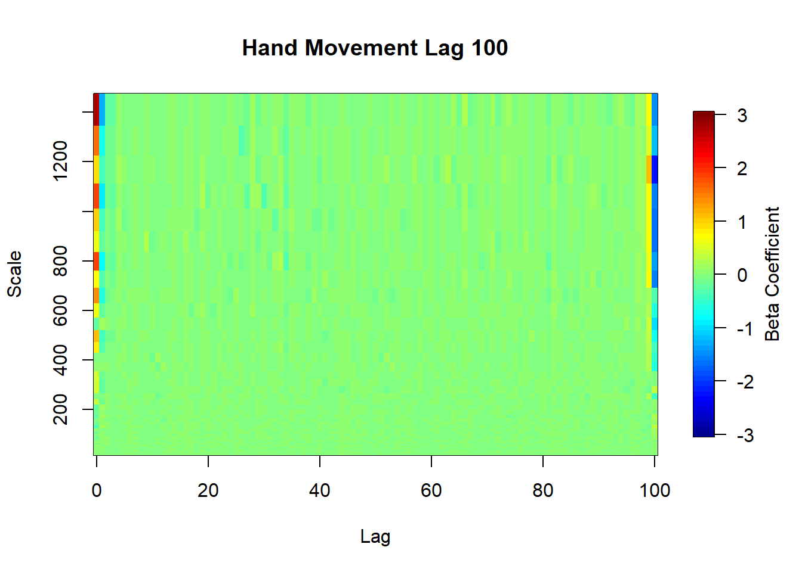
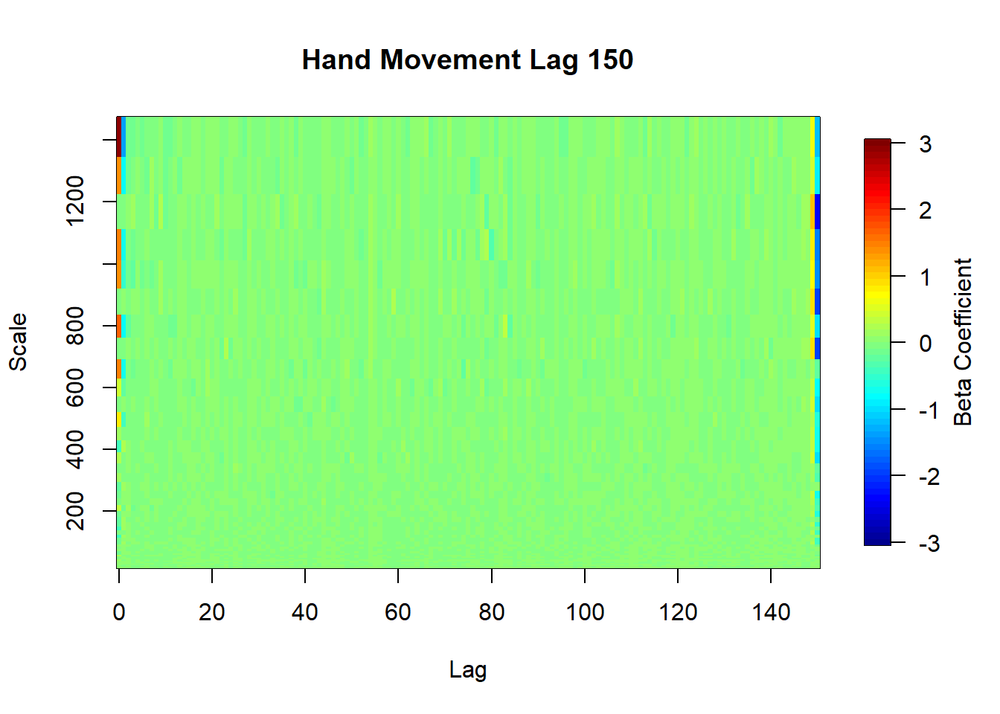
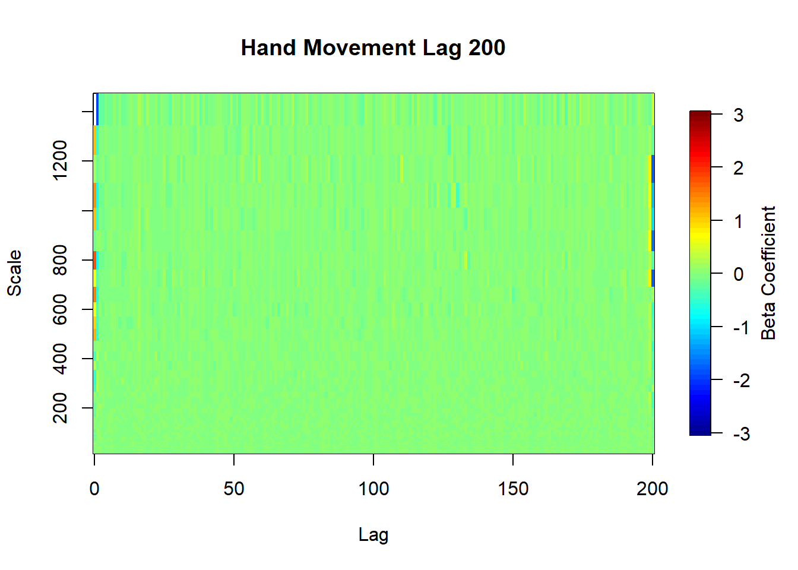
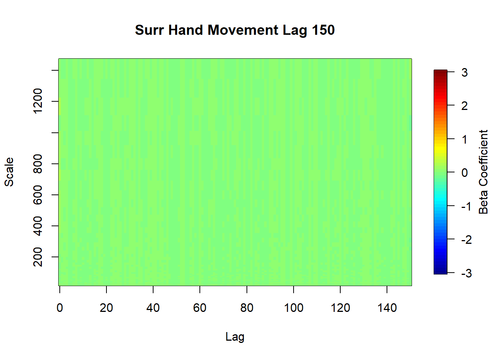
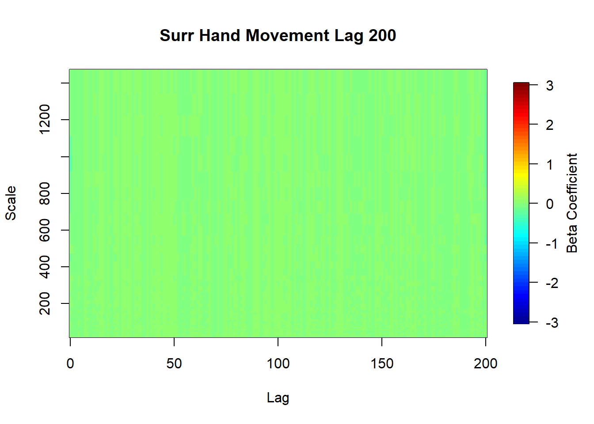
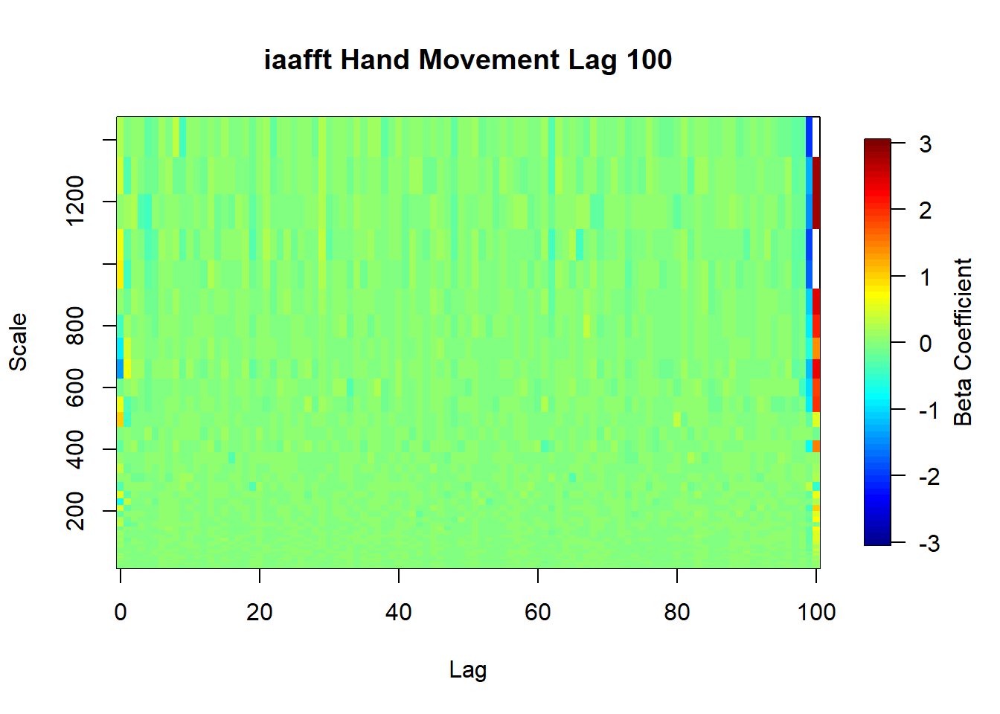
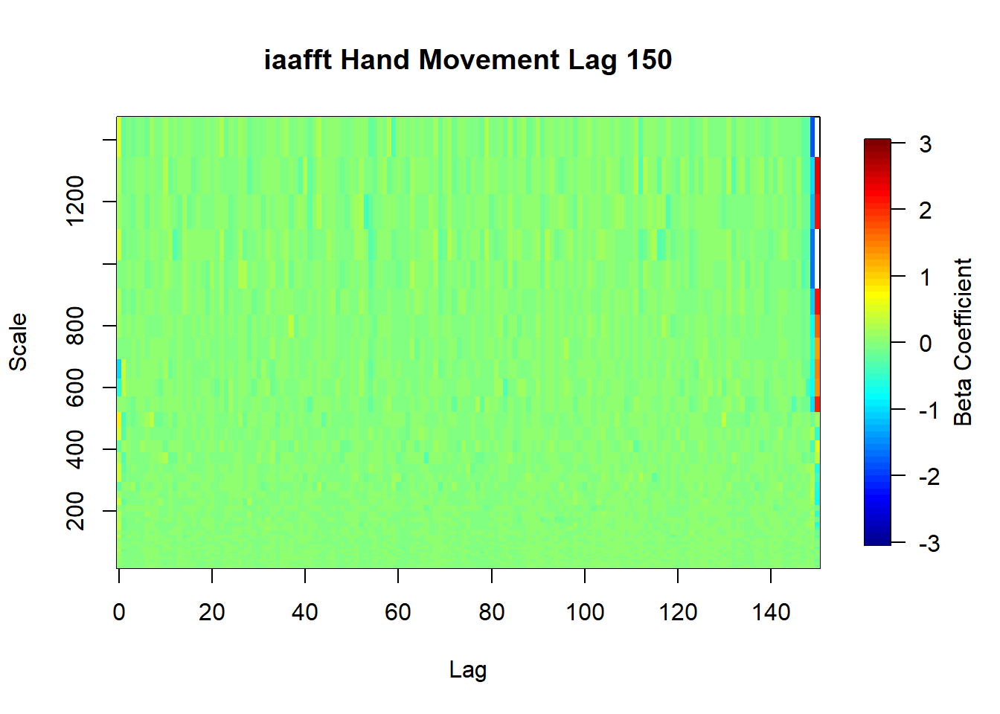
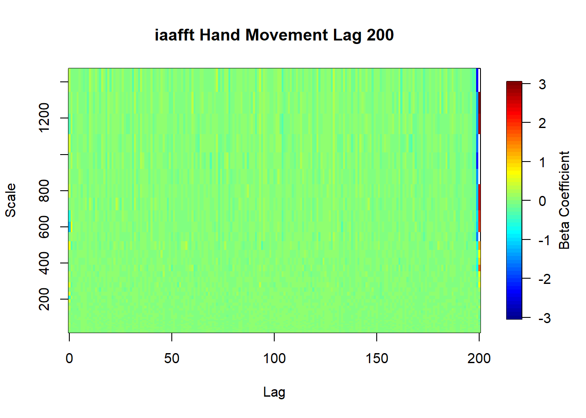
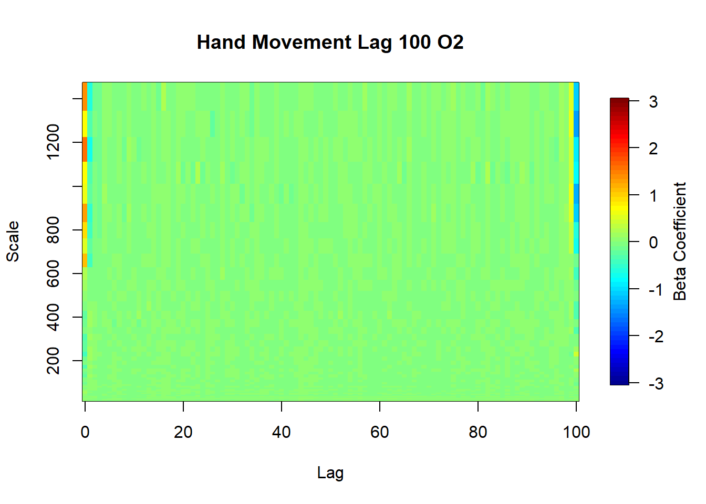
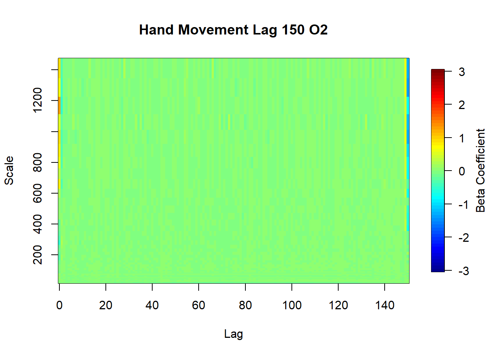

x <-0:100y <- scalesfields::image.plot(x, y, mlra.hand.out.100$betas, axes=TRUE, legend.lab ="Beta Coefficient", ylab="Scale", xlab="Lag", main="Hand Movement Lag 100",zlim=c(-3,3))

min(mlra.hand.out.100$betas)
[1] -2.280722
max(mlra.hand.out.100$betas)
[1] 2.71985
range(mlra.hand.out.100$betas[101,])
[1] -2.280722 0.347529
x <-0:150y <- scalesfields::image.plot(x, y, mlra.hand.out.150$betas, axes=TRUE, legend.lab ="Beta Coefficient", ylab="Scale", xlab="Lag", main="Hand Movement Lag 150",zlim=c(-3,3))

min(mlra.hand.out.150$betas)
[1] -2.37167
max(mlra.hand.out.150$betas)
[1] 2.899785
range(mlra.hand.out.150$betas[101,])
[1] -0.16246727 0.05390289
range(mlra.hand.out.150$betas[151,])
[1] -2.37166953 0.08230937
x <-0:200y <- scalesfields::image.plot(x, y, mlra.hand.out.200$betas, axes=TRUE, legend.lab ="Beta Coefficient", ylab="Scale", xlab="Lag", main="Hand Movement Lag 200",zlim=c(-3,3))

min(mlra.hand.out.200$betas)
[1] -1.916898
max(mlra.hand.out.200$betas)
[1] 4.013545
range(mlra.hand.out.200$betas[101,])
[1] -0.14493281 0.09495469
range(mlra.hand.out.200$betas[151,])
[1] -0.20313498 0.06103539
range(mlra.hand.out.200$betas[201,])
[1] -1.7936169 0.4657786
Surrogate Data
These are just a randomized version of the time series. From the quick surrogate methods (randomization), it seems that the edge patterns completely disappear.
x <-0:100y <- scalesfields::image.plot(x, y, mlra.surr.out.100$betas, axes=TRUE, legend.lab ="Beta Coefficient", ylab="Scale", xlab="Lag", main="Surr Hand Movement Lag 100",zlim=c(-3,3))
min(mlra.surr.out.100$betas)
[1] -0.1697568
max(mlra.surr.out.100$betas)
[1] 0.1645489
range(mlra.surr.out.100$betas[101,])
[1] -0.1697568 0.1348054
x <-0:150y <- scalesfields::image.plot(x, y, mlra.surr.out.150$betas, axes=TRUE, legend.lab ="Beta Coefficient", ylab="Scale", xlab="Lag", main="Surr Hand Movement Lag 150",zlim=c(-3,3))

min(mlra.surr.out.150$betas)
[1] -0.1727219
max(mlra.surr.out.150$betas)
[1] 0.2538271
range(mlra.surr.out.150$betas[101,])
[1] -0.037030912 0.006241083
x <-0:200y <- scalesfields::image.plot(x, y, mlra.surr.out.200$betas, axes=TRUE, legend.lab ="Beta Coefficient", ylab="Scale", xlab="Lag", main="Surr Hand Movement Lag 200",zlim=c(-3,3))

min(mlra.surr.out.200$betas)
[1] -0.359787
max(mlra.surr.out.200$betas)
[1] 0.08470865
range(mlra.surr.out.200$betas[101,])
[1] -0.03182616 0.04303363
IAAFFT
I only tested out one IAAFT permutation of the time series. The pattern of betas is different than the original. But the edge effect remains (particularly at the largest lags.
x <-0:100 y <- scales fields::image.plot(x, y, mlra.iaafft.out.100$betas, axes=TRUE, legend.lab ="Beta Coefficient", ylab="Scale", xlab="Lag", main="iaafft Hand Movement Lag 100",zlim=c(-3,3))

min(mlra.iaafft.out.100$betas)
[1] -2.01021
max(mlra.iaafft.out.100$betas)
[1] 4.35624
range(mlra.iaafft.out.100$betas[101,])
[1] -0.5662666 4.3562400
x <-0:150 y <- scales fields::image.plot(x, y, mlra.iaafft.out.150$betas, axes=TRUE, legend.lab ="Beta Coefficient", ylab="Scale", xlab="Lag", main="iaafft Hand Movement Lag 150",zlim=c(-3,3))

min(mlra.iaafft.out.150$betas)
[1] -1.883068
max(mlra.iaafft.out.150$betas)
[1] 3.941862
range(mlra.iaafft.out.100$betas[101,])
[1] -0.5662666 4.3562400
x <-0:200 y <- scales fields::image.plot(x, y, mlra.iaafft.out.200$betas, axes=TRUE, legend.lab ="Beta Coefficient", ylab="Scale", xlab="Lag", main="iaafft Hand Movement Lag 200",zlim=c(-3,3))

min(mlra.iaafft.out.200$betas)
[1] -2.307362
max(mlra.iaafft.out.200$betas)
[1] 4.601803
range(mlra.iaafft.out.200$betas[101,])
[1] -0.10241905 0.06561391
Detrending Order
Below I try out increasing the detending order. o2 the edge pattern remains at increased lags. o3 the edge pattern remains at increased lags.
x <-0:100 y <- scales fields::image.plot(x, y, mlra.hand.out.100.o2$betas, axes=TRUE, legend.lab ="Beta Coefficient", ylab="Scale", xlab="Lag", main="Hand Movement Lag 100 O2",zlim=c(-3,3))

min(mlra.hand.out.100.o2$betas)
[1] -1.424956
max(mlra.hand.out.100.o2$betas)
[1] 1.614861
range(mlra.hand.out.100.o2$betas[101,])
[1] -1.4249558 0.3905709
x <-0:150 y <- scales fields::image.plot(x, y, mlra.hand.out.150.o2$betas, axes=TRUE, legend.lab ="Beta Coefficient", ylab="Scale", xlab="Lag", main="Hand Movement Lag 150 O2",zlim=c(-3,3))

min(mlra.hand.out.150.o2$betas)
[1] -1.377023
max(mlra.hand.out.150.o2$betas)
[1] 1.264975
range(mlra.hand.out.150.o2$betas[101,])
[1] -0.1909625 0.1566988
x <-0:100 y <- scales fields::image.plot(x, y, mlra.hand.out.100.o2$betas, axes=TRUE, legend.lab ="Beta Coefficient", ylab="Scale", xlab="Lag", main="Hand Movement Lag 100 O3",zlim=c(-3,3))
min(mlra.hand.out.100.o3$betas)
[1] -1.398854
max(mlra.hand.out.100.o3$betas)
[1] 1.357468
range(mlra.hand.out.100.o3$betas[101,])
[1] -1.3988541 0.3309736
x <-0:150 y <- scales fields::image.plot(x, y, mlra.hand.out.150.o3$betas, axes=TRUE, legend.lab ="Beta Coefficient", ylab="Scale", xlab="Lag", main="Hand Movement Lag 150 O3",zlim=c(-3,3))